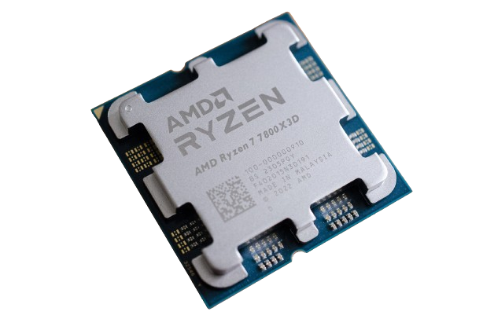

CPU(Central Processing Unit)
CPU(Central Processing Unit) คืออะไร
CPU ย่อมาจากหน่วยประมวลผลกลาง มันเป็นชิปภายในอุปกรณ์อิเล็กทรอนิกส์ของคุณที่ทำหน้าที่เป็นสมองของคอมพิวเตอร์ของคุณ การเปรียบเทียบที่ดีกว่าก็คือ CPU เป็นส่วนหนึ่งของสมองที่ทำหน้าที่คำนวณทั้งหมด แม้จะไม่ถูกต้องทั้งหมด แต่หน่วยประมวลผลกราฟิก (GPU) มักจะจัดการกับคณิตศาสตร์ที่เกี่ยวข้องกับกราฟิกได้มาก อย่างไรก็ตาม สำหรับงานส่วนใหญ่ที่ทำบนพีซีของคุณ CPU คือสิ่งที่ทำให้เกิดความมหัศจรรย์ มันทำการคำนวณที่จำเป็นเพื่อรันระบบปฏิบัติการของคุณ โหลดแอพที่คุณชื่นชอบ เล่นเกม สร้างไฟล์ และอื่นๆ อีกมากมาย พูดง่ายๆ ก็คือ หากไม่มี CPU คอมพิวเตอร์ของคุณจะไม่สามารถเป็นคอมพิวเตอร์ได้
CPU(Central Processing Unit) มีหน้าที่ทำอะไร
CPU รับคำสั่งจากซอฟต์แวร์ในคอมพิวเตอร์ของคุณ มันจะถอดรหัสคำสั่งเหล่านั้นแล้วดำเนินการ ซึ่งเป็นวิธีการพื้นฐานที่อุปกรณ์คอมพิวเตอร์สมัยใหม่ใช้งานได้จริง สามขั้นตอนนี้เรียกกันทั่วไปว่า Fetch, Decode และ Execute CPU สามารถดำเนินการคำสั่งเหล่านี้ได้นับล้านคำสั่งต่อวินาที
ประวัติของ CPU(Central Processing Unit)
ประวัติความเป็นมาของ CPU (หน่วยประมวลผลกลาง) ย้อนกลับไปในช่วงปลายทศวรรษ 1950 เมื่อ CPU ตัวแรกเรียกว่า UNIVAC 1103 ได้รับการพัฒนาโดยเป็นส่วนหนึ่งของคอมพิวเตอร์ UNIVAC I CPU รุ่นแรกนี้มีพื้นฐานมาจากหลอดสุญญากาศ และมีขนาดค่อนข้างใหญ่และช้าเมื่อเทียบกับ CPU สมัยใหม่ ในทศวรรษ 1960 CPU ที่ใช้ทรานซิสเตอร์ได้รับการพัฒนา ซึ่งมีขนาดเล็กลงและมีประสิทธิภาพมากกว่า CPU ที่ใช้หลอดสุญญากาศ ในช่วงทศวรรษ 1970 มีการพัฒนาไมโครโปรเซสเซอร์ ซึ่งมีขนาดเล็กลงและมีประสิทธิภาพมากกว่า CPU รุ่นก่อนๆ ปัจจุบัน CPU ผลิตขึ้นโดยใช้เทคโนโลยีไมโครอิเล็กทรอนิกส์และพบได้ในอุปกรณ์หลากหลายประเภท ตั้งแต่สมาร์ทโฟนไปจนถึงซูเปอร์คอมพิวเตอร์ เป็นองค์ประกอบหลักของคอมพิวเตอร์ที่ทำหน้าที่ประมวลผลส่วนใหญ่
.png)